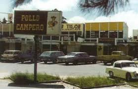

Nuestra Historia
Pollo Campero nació en Guatemala en 1971, con una receta única de pollo frito que rápidamente conquistó el paladar de los guatemaltecos. Fundado por la familia Gutiérrez, el primer restaurante abrió sus puertas en la zona 9 de la ciudad capital.
Gracias a su sabor inigualable, servicio cálido y ambiente familiar, Campero se expandió rápidamente en Centroamérica y luego a Estados Unidos, Europa y otras regiones. Hoy, la marca es reconocida internacionalmente como un símbolo de orgullo guatemalteco.
A lo largo de las décadas, Pollo Campero ha mantenido viva su tradición, innovando constantemente en su menú, tecnología de servicio y compromiso social, sin perder la esencia que lo hizo famoso: su auténtico sabor casero.
Con más de 400 restaurantes alrededor del mundo, seguimos compartiendo lo mejor de Guatemala, una pieza de historia a la vez.
